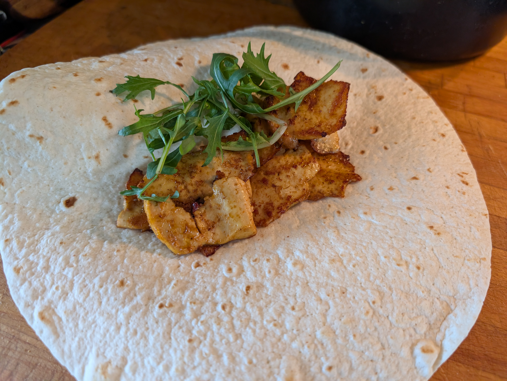

Home
Tofu Doner Kebab

Description
Want an easy, meat-free meal reminiscent of a kebab? Look no further than this tofu doner recipe! It may not be the same greasy strips of lamb or chicken that you're used to, but give it a go and it may just scratch the itch!
Ingredients
- 3 tbsp sunflower oil
- 350g extra firm tofu
- 2 tbsp soy sauce
- 2 tbsp of a chilli sauce of your choice
- 1 tbsp ketchup
- 1/2 tsp cumin powder
- 1/4 tsp black pepper
- 1 tbsp lemon juice
- 1 clove of garlic
- 1 tsp cornflour
- salt to taste (optional)
Method
- Press your block of tofu and air fry it whole for 10 minutes, to dry out remaining liquid.
- For your marinade, mix together the soy sauce, chilli sauce, ketchup, cumin, salt, pepper, lemon juice and garlic in a large bowl.
- Move one tablespoon of the marinade into a small dish and mix in the cornflour. This makes it easier for the cornflour to mix in, preventing lumps. Once mixed, add it back into the main bowl.
- Once the block of tofu has cooled enough to handle, use a potato peeler or a serrated knife to cut the block into thin slices, and place them in the marinade for at least 15 minutes.
- Heat up you pan with a bit of oil and fry the tofu for around 8-10 minutes, flipping each slice halfway through. It is best cook it in a couple of batches to ensure each slice of tofu has enough space on the pan.
- You're done! Serve your tofu hot and fresh with whatever flatbreads and sauces you wish. I recommend garlic mayo! :)